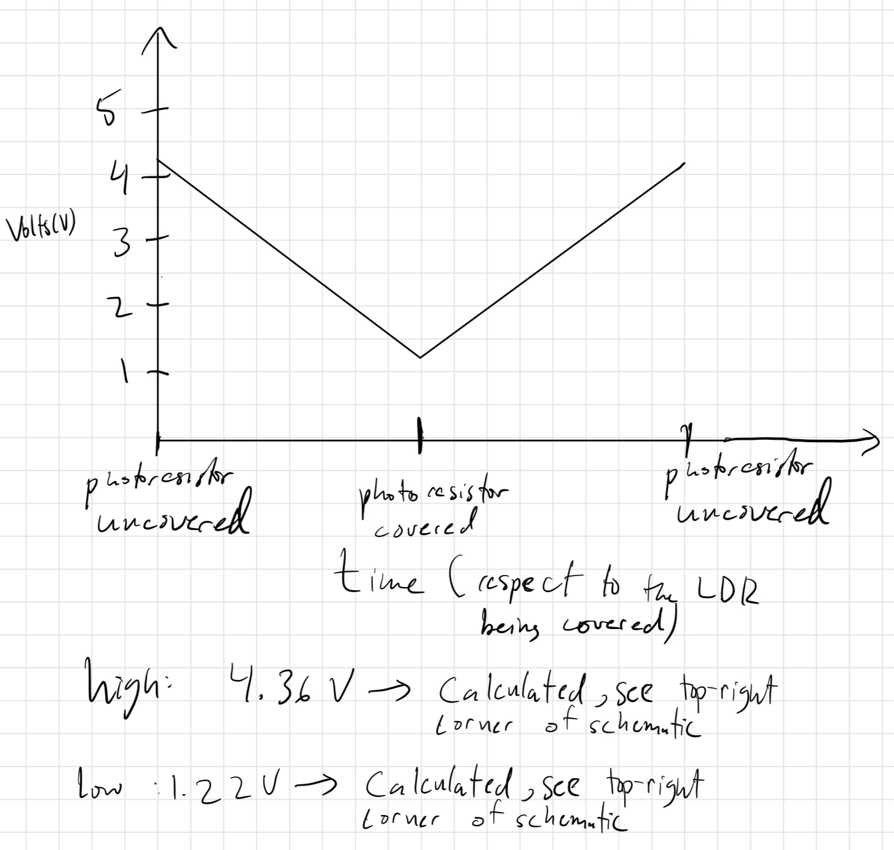

This is a video of my Arduino circuit. There are 2 LEDs that change state pending the state of the LDR and voltage divider. The Green LED's brightness corresponds to the
value outputted by the voltage divider. When the LDR is exposed to more light, the resistance is lower, and the voltage read by the voltage divider
is higher, thus the green light is brighter. This is also why when the LDR is covered, the green LED dims. The red LED simply turns on when the
voltage divider reaches about halfway between the highest and lowest value it read during my testing.
The Schematic & Calculations:

This is my written out schematic. As shown by my work, I ended up using 220 ohm resistors because I did not have 160 ohm resistors for the red & green LEDs.
I also used the 10k resistor so it can restrict the current down to 0.5mA (5V/10000ohms=0.5mA) in case the LDR gave 0 ohms of resistance. Work and explanations for voltage out values and
resistance for the LDR in light and dark conditions are present in the image.
Firmware
//runs this code once at the start
void setup() {
//Sets bit rate for serial data transmission (matches baud in menu)
Serial.begin(9600);
//sets pin 5 to output
pinMode(5, OUTPUT);
//sets pin 6 to output
pinMode(6, OUTPUT);
}
//loops this code repeatedly forever
void loop() {
//prints the value that analogRead(A0) gives us to the Serial Monitor
Serial.println(analogRead(A0));
//I make an int fiveVoltage and map it to a value between 0 and 255 (inclusive)
//so it can be passed into analogWrite() later. I chose the lower limits to be
//250 and 900 because those were the best bounds for the most obvious changes in lighting
//for the room that I was in.
int fiveVoltage = map(analogRead(A0), 250, 900, 0, 255);
//made int sixCondition and mapped it to a value between 0 and 100 (inclusive)
//so I could pass sixCondition into an if-else statement late to see if
//the photoresistor was covered or not
int sixCondition = map(analogRead(A0), 250, 900, 0, 100);
//prints value for fiveVoltage to the Serial Monitor
Serial.println(fiveVoltage);
//prints value for sixCondition to the Serial Monitor
Serial.println(sixCondition);
//Prints a new line for readability purposes
Serial.println();
//Makes pin 5 output voltage proportional to what analogRead(A0) reads
analogWrite(5, fiveVoltage);
//checks to see if the sixCondition is < 50, meaning the LDR is covered.
//50 would be halfway between 250 and 900 on analogRead
if(sixCondition < 50){
//sets pin 6 to output 5V if condition is met (covered)
digitalWrite(6, HIGH);
//else statement for when sixCondition is !< 50
//(when the photoresistor is uncovered)
} else{
//turns pin 6 to output 0V
digitalWrite(6, LOW);
}
//delays 100ms for readability purposes on the Serial Monitor
delay(100);
}
This code has comments on every line that explain what it does, but in general, pin 5 mirrors the voltage value from A0, and
pin 6 is either set to output 0 or 5 volts pending the voltage value from A0. Also, the values read fro AO, the mapped corresponding value for
pin 5, and the value I use to check if pin 6 should be HIGH or LOW are printed to the Serial Monitor.
874
244
95
874
244
96
874
244
96
268
7
2
267
7
2
250
0
0
This is an example of what you would see on the Serial Monitor. The higher values are when the LDR is uncovered, and thus the voltage divider is reading high values.
The opposite is true for the lower values, which is when the LDR is covered.
Additional Questions
1: In your voltage divider, can the variable resistor be either R1 or R2 or does it need to be one or the other? Justify your answer with example calculations.
You cannot switch the values for R1 and R2 because that would change the V-out from what it is in reality.
2: Draw a graph where the x-axis is time and the y-axis is voltage. Plot the voltage at V-measure of your voltage divider of your shared gif.

This graph shows what voltage the voltage divider would read over the course of someone covering the LDR with their hand slowly, similar to what I did in the video
at the top of the page. The high and low values were calculated at the top-right corner of the schematic page.
3: AnalogWrite and analogRead are respectively 8-bit and 10-bit values. Imagine you had 10-bit PWM and a 16-bit analog-to-digital converter instead. How would this change your map() code? Explain your answer.